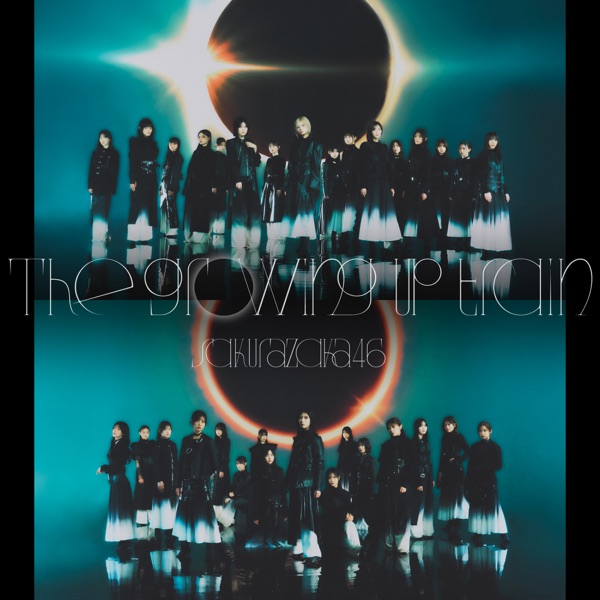
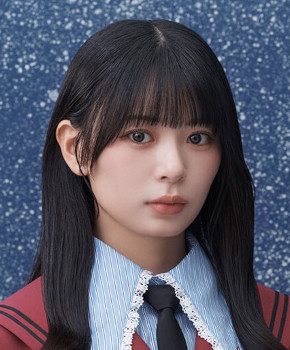
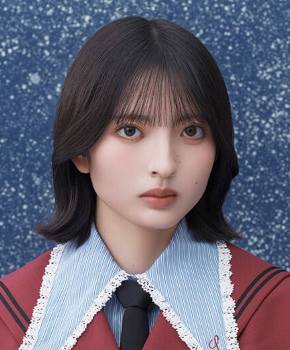

サカミチ
サカミチドライフルーツどらいふるーつ

初収録リリース「The growing up train」のジャケット
櫻坂46
発売日：2026-03-11
収録：The growing up train（14thSG）
種別：BACKS曲
センター：村山美羽
作曲：LEE LAB
編曲：花村智志
ライブ披露：11件
フォーメーション
上が後列、下が前列です。色付きがセンター。（公式発表に基づく）
松本和子
 遠藤光莉
遠藤光莉 大沼晶保
大沼晶保 小田倉麗奈
小田倉麗奈
稲熊ひな 幸阪茉里乃
幸阪茉里乃目黒陽色
 小島凪紗
小島凪紗
山田桃実遠藤理子
中川智尋
 増本綺良
増本綺良勝又春
 村山美羽
村山美羽 武元唯衣
武元唯衣参加メンバー（16名）
遠藤光莉、大沼晶保、幸阪茉里乃、武元唯衣、増本綺良、石森璃花、遠藤理子、小田倉麗奈、小島凪紗、村山美羽、稲熊ひな、勝又春、中川智尋、松本和子、目黒陽色、山田桃実
この曲が披露されたライブ（11件）
同じリリースの曲
The growing up train、光源、ドライフルーツ、キスが苦い、くらげらしく、Sunny side up、僕は向いてない